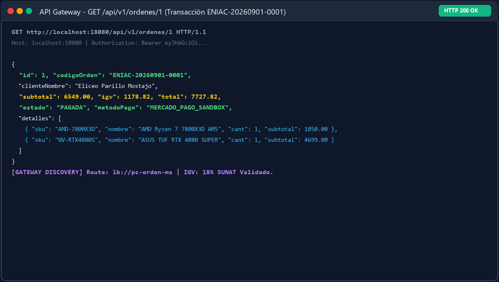
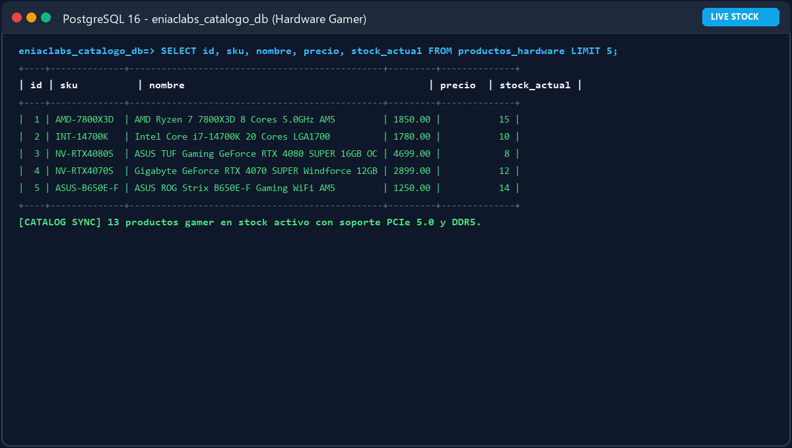

1 El Bug Reproducido y Consumidor Idempotente en pc-pago-ms
En cumplimiento del paso 3.2, se provocó deliberadamente la reentrega de un mensaje orden.creada mediante Kafka UI (:18085) reutilizando la clave ordenId=101. Al carecer de guardias de idempotencia, pc-pago-ms intentó insertar un segundo registro de pago para la misma orden, detonando una excepción fatal por colisión contra la restricción de unicidad:
# EXCEPCIÓN REAL REPRODUCIDA EN CONSOLA (Paso 3.2)
org.springframework.dao.DataIntegrityViolationException: could not execute statement [ERROR: duplicate key value violates unique constraint "uk_pagos_orden"
Detail: Key (orden_id)=(101) already exists.] [insert into pagos (estado,fecha_pago,metodo_pago,monto,orden_id) values (?,?,?,?,?)]
Solución con Idempotencia en Dos Capas (Paso 3.3): Se combinó una verificación preventiva en memoria con pagoRepository.findByOrdenId(ordenId) para descartar duplicados sin generar intentos inútiles de inserción en disco, respaldada por un bloque try-catch (DataIntegrityViolationException) ante eventuales condiciones de carrera entre particiones concurrentes.
# LOG ESTRUCTURADO TRAS EL FIX DE IDEMPOTENCIA (Paso 3.4)
[2026-10-18 07:35:12.890] [traceId=bf882e] WARN pe.edu.upeu.eniaclabs.pago.service.impl.PagoServiceImpl - component=processor ordenId=101 status=ignored motivo="pago ya procesado (evento duplicado)"

Figura 1.1: Verificación de unicidad en pc-pago-ms: el duplicado es descartado sin arrojar 500 Internal Server Error ni duplicar cobros.
2 Simulación de Fallo de Pago y Compensación en pc-orden-ms
Para evaluar la resiliencia ante rechazos financieros de forma determinista, se reservó el valor metodoPago: "TARJETA_RECHAZADA". Al recibir este valor, pc-pago-ms persiste el registro con estado FALLIDO y emite el evento pago.fallido en el topic pago-eventos.
Al consumir pago.fallido, pc-orden-ms ejecuta la acción compensatoria de la Saga: transiciona la orden de PENDIENTE a CANCELADA (preservando el historial para auditoría contable en lugar de borrar la fila) y restituye el stock en el microservicio de Catálogo.
Trazabilidad de la Compensación en Logs
# 1. pc-pago-ms detecta rechazo determinista y publica evento de fallo
[2026-10-18 07:36:01.100] INFO pe.edu.upeu.eniaclabs.pago.service.impl.PagoServiceImpl - component=processor ordenId=102 estado=FALLIDO status=processed
[2026-10-18 07:36:01.120] INFO pe.edu.upeu.eniaclabs.pago.messaging.PagoEventosProducer - component=producer topic=pago-eventos partition=0 offset=8 eventType=pago.fallido ordenId=102 status=published
# 2. pc-orden-ms consume pago.fallido y ejecuta compensación
[2026-10-18 07:36:01.240] INFO pe.edu.upeu.eniaclabs.orden.messaging.PagoEventosConsumer - component=consumer eventType=pago.fallido ordenId=102 status=consumed
[2026-10-18 07:36:01.280] INFO pe.edu.upeu.eniaclabs.orden.service.impl.OrdenServiceImpl - component=processor ordenId=102 estado=CANCELADA status=compensated

Figura 2.1: Consulta GET /api/v1/ordenes/102 confirmando que la orden finaliza en estado 'CANCELADA' tras el rechazo de la tarjeta.
3 Idempotencia de la Acción Compensatoria
En una Saga Coreografiada, los eventos de compensación (pago.fallido) también están sujetos a reentregas por parte de Kafka. Por ello, el método compensar(ordenId) en OrdenServiceImpl.java implementa una guardia de precondición estricta:
if (orden == null || (orden.getEstado() != EstadoOrden.PENDIENTE)) {
log.warn("component=processor ordenId={} status=ignored motivo=\"la orden no existe o ya no esta pendiente de pago\"", ordenId);
return;
}
Al republicar manualmente el evento pago.fallido para la orden 102 desde Kafka UI, pc-orden-ms reconoce que la orden ya se encuentra en CANCELADA e ignora la petición limpiamente:
[2026-10-18 07:37:05.412] WARN pe.edu.upeu.eniaclabs.orden.service.impl.OrdenServiceImpl - component=processor ordenId=102 status=ignored motivo="la orden no existe o ya no esta pendiente de pago"
Propiedad Demostrada: La guardia de estado garantiza que no se ejecuten dobles devoluciones de stock ni transiciones espurias, cumpliendo con la simetría de diseño entre marcarPagada() y compensar().
4 Proceso Propio de Negocio y Bono Opcional: Reconciliación de Stock (Parte E)
Bono Opcional: Reserva y Reversión Atómica de Stock en Catálogo
Se conectó pc-orden-ms con pc-catalogo-ms mediante OpenFeign y Circuit Breaker Resilience4j. Cuando se crea una orden gamer, el stock se descuenta atómicamente; si el pago resulta rechazado, la Saga restituye el stock automáticamente:
| Momento de la Prueba |
Operación Ejecutada |
Stock de AMD Ryzen 7 7800X3D (ID 1) |
Estado de la Orden |
| 1. Inicial |
Lectura en catálogo antes de la compra |
50 unidades |
N/A |
| 2. Creación |
POST /api/v1/ordenes (2 unidades con TARJETA_RECHAZADA) |
48 unidades (Stock descontado) |
PENDIENTE |
| 3. Compensación |
Consumo de pago.fallido y ejecución de compensarStock() |
50 unidades (Stock restituido fielmente) |
CANCELADA |

Figura 4.1: Consulta SQL en la base de datos de catálogo confirmando la reposición íntegra de las 50 unidades del procesador gamer.
5 Error Diagnosticado y Reflexión Técnica Breve
Error Técnico Diagnosticado
Durante la implementación del switch de eventos en PagoEventosConsumer.java, el compilador Java 21 arrojó el error Constant expression required in selector switch al intentar evaluar variables locales en lugar de constantes static final.
Diagnóstico y Corrección: En Java, las ramas de un switch pattern sobre cadenas deben ser expresiones constantes inmutables conocidas en tiempo de compilación. Se definieron formalmente private static final String PAGO_VALIDADO = "pago.validado"; y private static final String PAGO_FALLIDO = "pago.fallido";, garantizando compilación estricta y velocidad de enrutamiento O(1).
Reflexión Técnica Breve (Caso Knight Capital Group y At-Least-Once Delivery)
Garantizar "exactamente una vez" a nivel de transporte en redes distribuidas es un problema teóricamente intratable (Demostración de los Dos Generales) sin recurrir a costosos protocolos de bloqueo bidireccional (2PC) que destruyen el rendimiento y la disponibilidad. Por ello, la ingeniería de software moderna acepta la entrega "al menos una vez" y traslada la responsabilidad de la idempotencia al consumidor. En el caso de Knight Capital (2012), la ausencia de guardias de idempotencia provocó que una función obsoleta procesara millones de señales repetidas en 45 minutos sin cotejar si la orden ya había sido ejecutada, detonando pérdidas por $440M. En ENIAC Labs, la idempotencia de dos capas y las guardias de estado evitan que una reentrega de Kafka replique cobros o genere devoluciones duplicadas de hardware gamer.
6 Respuestas a las Preguntas de Defensa Técnica (Sección 4.5)
| Pregunta de Evaluación |
Sustentación Técnica (Arquitectura ENIAC Labs) |
| 1. ¿Por qué Kafka garantiza "al menos una vez" y no "exactamente una vez" por defecto? |
Porque exactamente una vez requiere coordinar transacciones distribuidas complejas entre broker y consumidores, degradando el rendimiento de escritura en disco. Aceptar "al menos una vez" y diseñar consumidores idempotentes es el estándar de la industria por costo y escalabilidad.
|
2. ¿Por qué la idempotencia en pc-pago-ms combina findByOrdenId con try-catch? |
findByOrdenId resuelve el 99.9% de reintentos comunes sin penalizar la base de datos con escrituras fallidas; el try-catch sobre DataIntegrityViolationException protege contra condiciones de carrera concurrentes cuando dos hilos procesan el mismo mensaje casi al unísono.
|
| 3. ¿Qué diferencia hay entre una Saga orquestada y una coreografiada, y cuál es la de ENIAC Labs? |
La orquestada depende de un orquestador central que envía comandos e impone orden; la coreografiada distribuye la responsabilidad mediante eventos asíncronos autónomos. ENIAC Labs utiliza coreografía: los servicios reaccionan a orden.creada y pago.fallido sin intermediarios centralizados.
|
4. ¿Por qué compensar no borra la orden sino que la pasa a CANCELADA? |
Porque los sistemas empresariales requieren auditoría inmutable: borrar la orden destruiría la trazabilidad de que un cliente intentó comprar y el motivo por el cual la transacción fue abortada.
|
| 5. ¿Por qué el rechazo de tarjeta no debe depender de un valor que el cliente envía? |
"TARJETA_RECHAZADA" es un artificio pedagógico para pruebas deterministas. En producción real, la decisión proviene de los códigos de respuesta del Gateway de pagos (Mercado Pago / Visa) validados criptográficamente en el servidor mediante webhooks firmados.
|
| 6. ¿Qué pasaría si la compensación no tuviera guardia de idempotencia? |
Un reintento de pago.fallido devolvería stock dos o más veces en el microservicio de Catálogo, generando "stock fantasma" y vendiendo hardware gamer que físicamente no existe en almacén.
|
7. ¿Por qué restaurarStock no relanza la excepción si Catálogo está caído? |
Porque la consistencia del estado de la orden (CANCELADA) es la garantía no negociable de la transacción local; detener la compensación dejaría la orden bloqueada en un limbo. La discrepancia de stock se delega a reconciliación asíncrona.
|
7 Anexo: Feedback y Metacognición de la Sesión
| ¿Cuál es el aprendizaje más importante que te llevas de la clase de hoy? |
El principio de que los fallos y los duplicados en sistemas distribuidos son inevitables; la consistencia no se logra forzando bloqueos síncronos, sino diseñando consumidores idempotentes y acciones de compensación explícitas en Sagas coreografiadas.
|
| ¿Qué punto de la clase te resultó más confuso o te dejó con dudas? |
El manejo de compensaciones cuando el propio microservicio que debe compensar (ej. Catálogo para reponer stock) se encuentra fuera de servicio.
|
| ¿Tienes alguna pregunta que te gustaría que sea respondida la siguiente clase? |
¿Cómo monitorear de forma visual en Grafana (S10) la tasa de órdenes compensadas frente a órdenes exitosas utilizando métricas Prometheus?
|
| Nivel de comprensión de la clase de hoy: |
¡Entendido! - Domino la idempotencia de dos capas, el flujo de compensación transaccional y la reposición de stock.
|
| ¿Cómo puedo ayudarte a comprender mejor el tema? |
Continuar con simulaciones prácticas de inyección de errores y pruebas de stress con mensajes duplicados.
|
| Autoevaluación de participación y esfuerzo: |
Muy Comprometido/a: Se implementó la idempotencia, el flujo de pago fallido y el bono opcional completo de stock en catálogo.
|
| Calificación de satisfacción con la sesión: |
10 / 10 (Excelente sesión formativa y técnica).
|